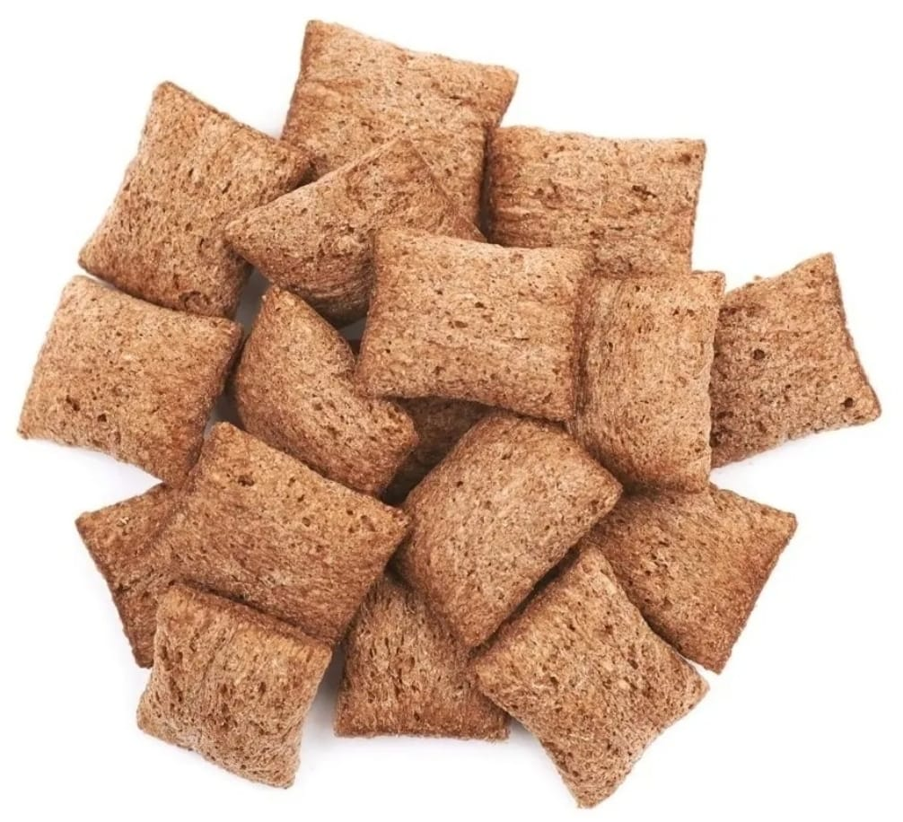
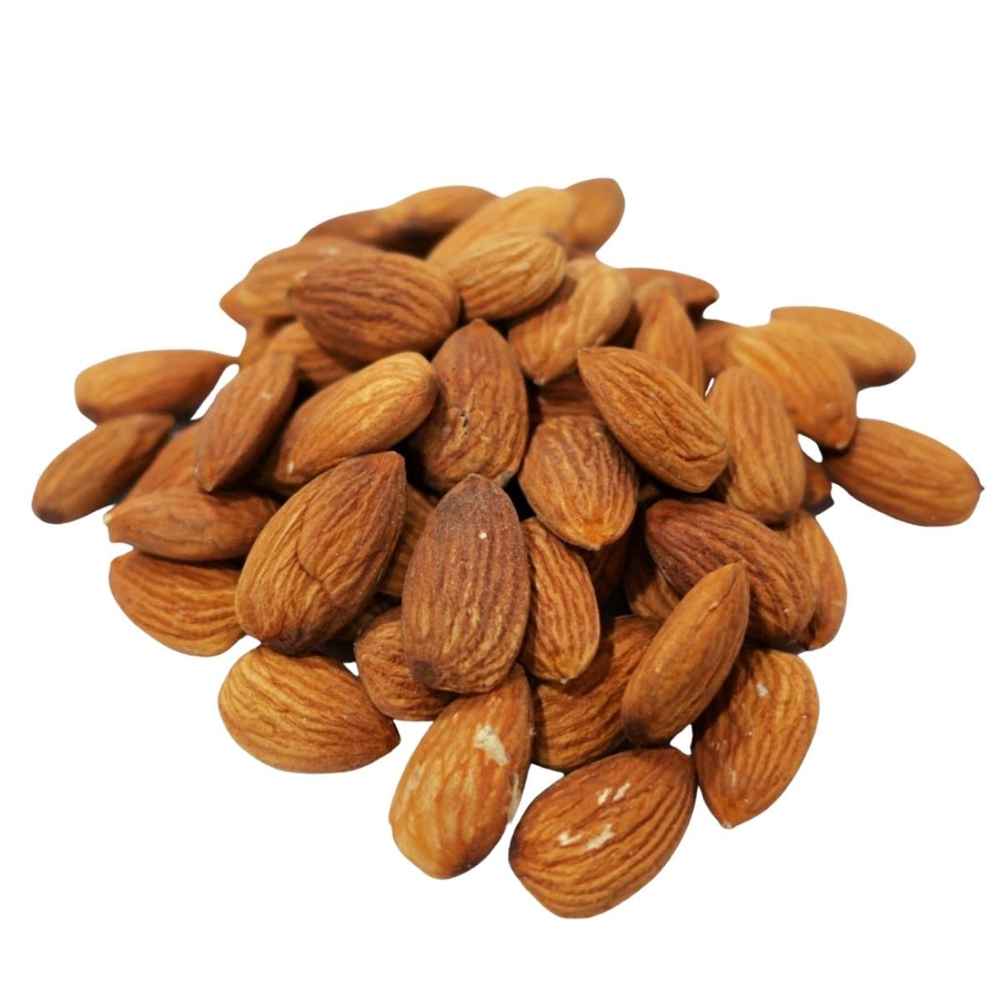
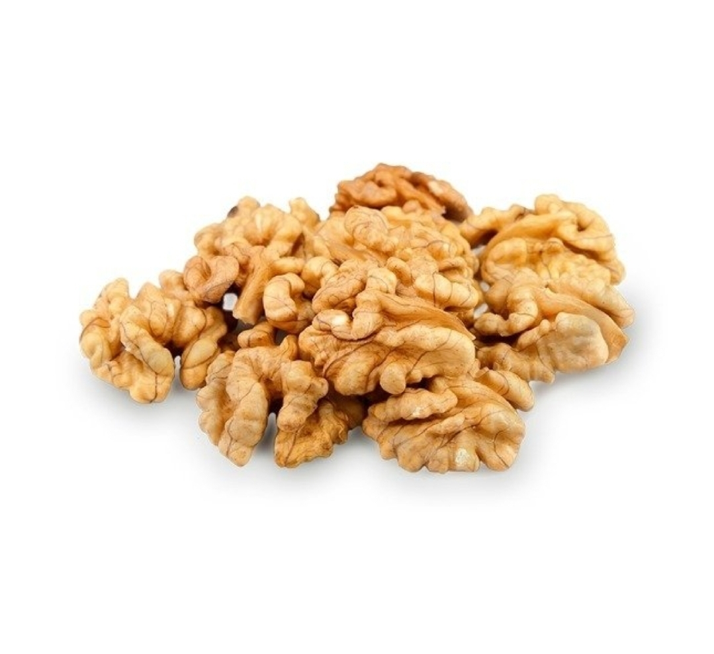
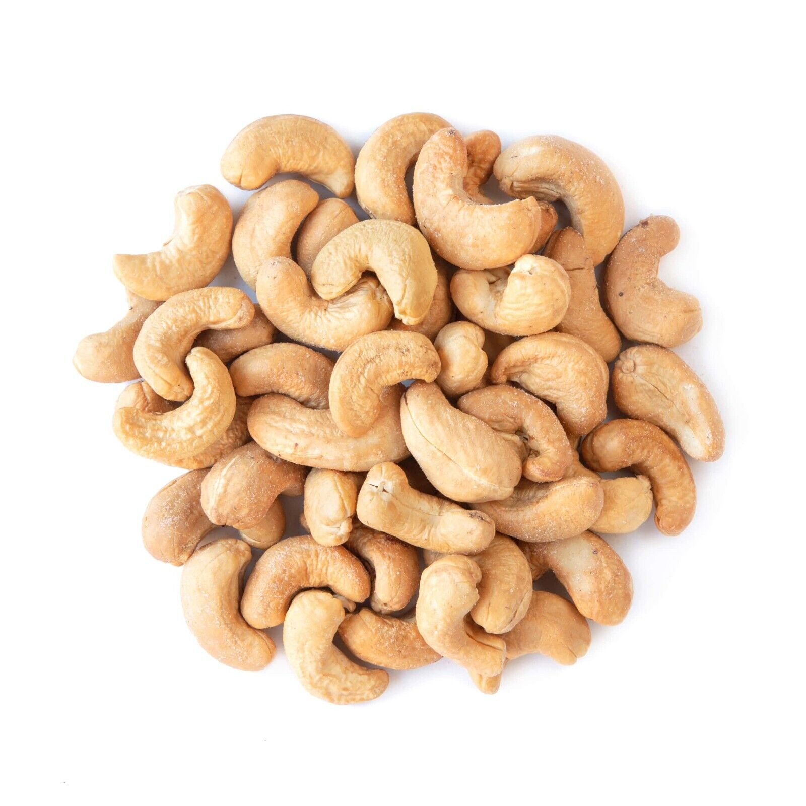
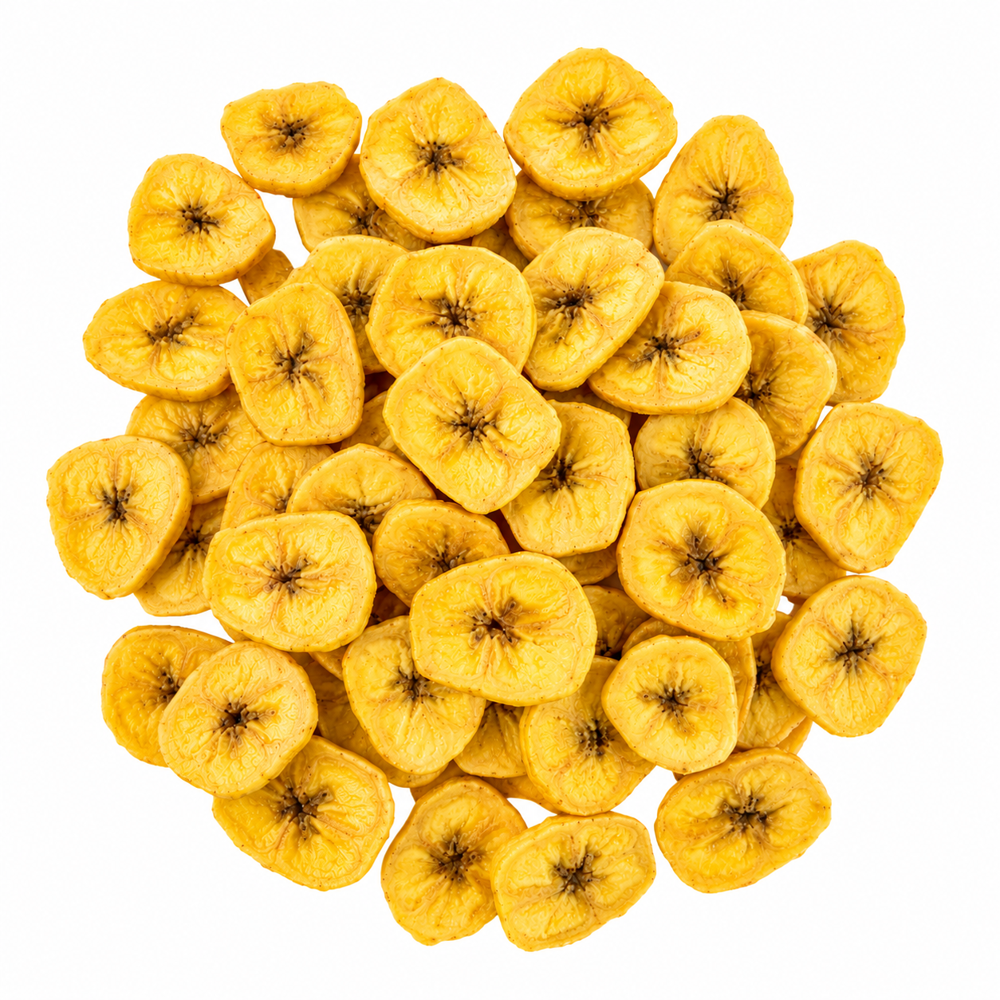
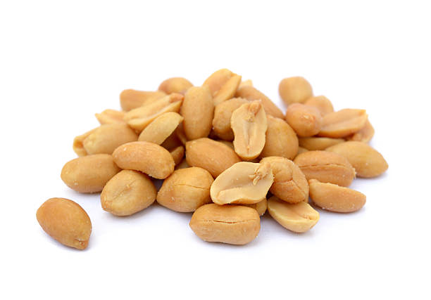
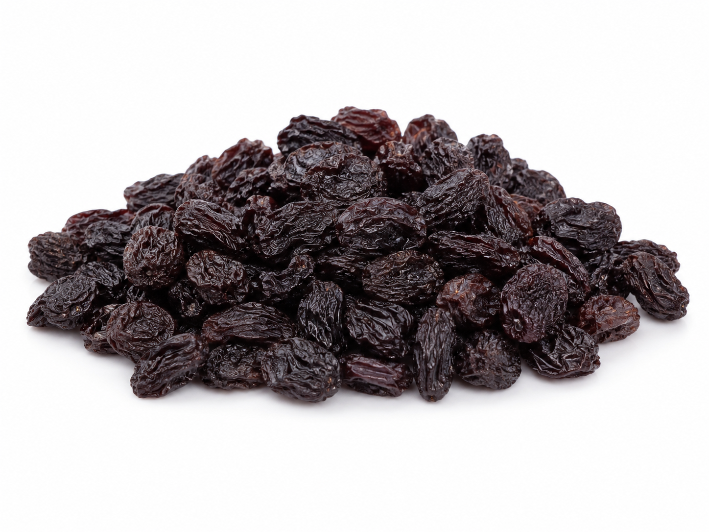
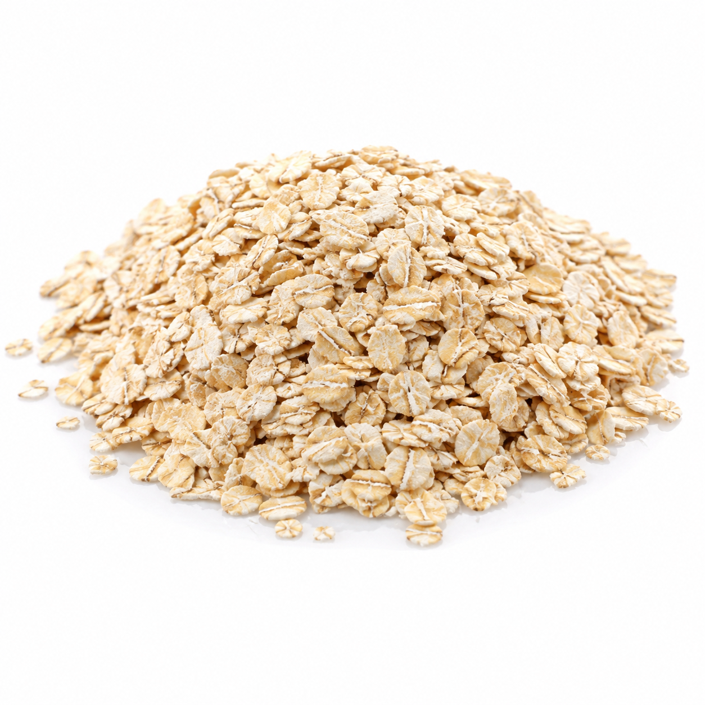
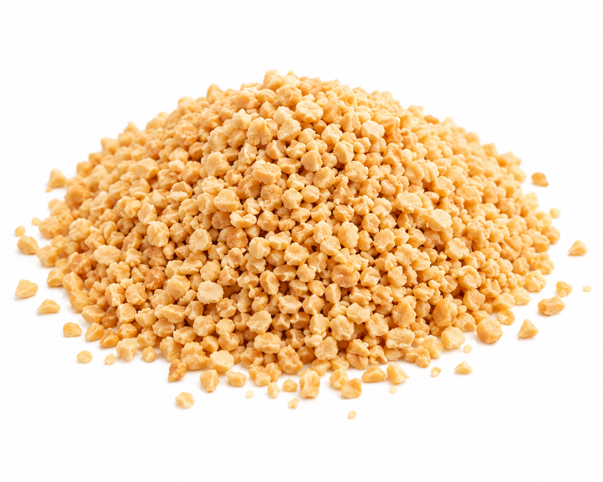

Almohaditas

¿Por qué elegirlas?
✓ Tres sabores para elegir.
✓ Ideales para desayunos y meriendas.
✓ Saludables, livianas y ricas.
Elegí tus favoritos
Conocé nuestras opciones y elegí tu favorita

✓ Tres sabores para elegir.
✓ Ideales para desayunos y meriendas.
✓ Saludables, livianas y ricas.

180 g — $6.000
500 g — $16.000
1 kg — $27.000
✓ Ayudan a mantener una buena salud cardiovascular gracias a sus grasas insaturadas.
✓ Su vitamina E contribuye a proteger las células frente al daño oxidativo.
✓ Su aporte de fibra favorece el funcionamiento intestinal.
✓ Sus proteínas y grasas ayudan a generar mayor sensación de saciedad.

180 g — $4.500
500 g — $10.000
1 kg — $18.000
✓ Aportan omega-3 de origen vegetal (ALA), beneficioso para la salud cardiovascular.
✓ Sus grasas insaturadas contribuyen a mantener niveles normales de colesterol.
✓ Aportan antioxidantes que ayudan a proteger las células frente al daño oxidativo.
✓ Su combinación de grasas, proteínas y fibra favorece la sensación de saciedad.

180 g — $4.500
500 g — $10.000
1 kg — $18.000
✓ Aportan magnesio, mineral que contribuye al funcionamiento normal de músculos y sistema nervioso.
✓ Contienen cobre, que participa en el metabolismo energético y en la protección de las células frente al daño oxidativo.
✓ Sus grasas insaturadas forman parte de una alimentación favorable para la salud cardiovascular.
✓ Aportan proteínas y grasas que ayudan a generar sensación de saciedad.

180 g — $4.000
500 g — $8.000
1 kg — $15.000
✓ Aportan carbohidratos, una fuente de energía para el organismo.
✓ Contienen potasio, mineral que contribuye al funcionamiento normal de músculos y sistema nervioso.
✓ Aportan fibra, que favorece el funcionamiento intestinal.
✓ Son una opción práctica para sumar energía en desayunos, meriendas o colaciones.

Con sal · Sin sal
180 g — $1500
500 g — $3.000
1 kg — $5.000
✓ Aporta proteínas vegetales que contribuyen al mantenimiento de la masa muscular.
✓ Contiene grasas insaturadas, asociadas a una alimentación favorable para la salud cardiovascular.
✓ Aporta magnesio, que contribuye al funcionamiento normal de músculos y sistema nervioso.
✓ Su combinación de proteínas, grasas y fibra ayuda a generar sensación de saciedad.

180 g — $2.000
500 g — $3.500
1 kg — $6.000
✓ Aportan carbohidratos, que contribuyen a proporcionar energía al organismo.
✓ Aportan fibra, que favorece el funcionamiento intestinal.
✓ Contienen potasio, mineral que contribuye al funcionamiento normal de músculos y sistema nervioso.
✓ Contienen compuestos antioxidantes presentes naturalmente en las uvas.

180 g — $1000
500 g — $2.500
1 kg — $4.000
✓ Aporta fibra, que favorece el funcionamiento intestinal.
✓ Contiene beta-glucanos, un tipo de fibra soluble presente naturalmente en la avena.
✓ Aporta carbohidratos, que proporcionan energía al organismo.
✓ Es una opción nutritiva y versátil para incorporar en desayunos y meriendas.

180 g — $1000
500 g — $2.000
1 kg — $3.900
✓ Aporta proteínas vegetales que contribuyen al mantenimiento de la masa muscular.
✓ Contiene grasas insaturadas, adecuadas dentro de una alimentación equilibrada.
✓ Aporta magnesio, que contribuye al funcionamiento normal de músculos y sistema nervioso.
✓ Es práctica para sumar sabor, textura y nutrientes a distintas preparaciones.